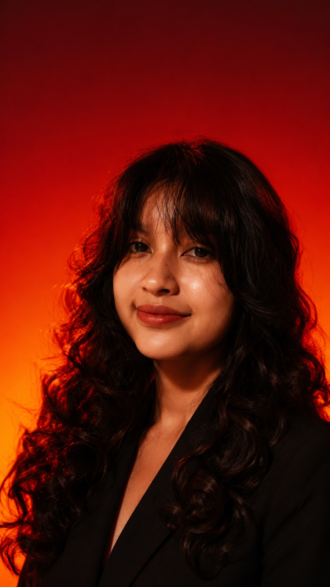

Fotógrafa, editora de podcast y creadora de contenido
Me gusta contar historias desde la imagen, el sonido y los formatos digitales.
Hola, soy Nayeli Monroy. Me desarrollo en el área audiovisual con interés especial en la fotografía, la edición de podcast y la creación de contenido para redes sociales. Me gusta trabajar con piezas que tengan intención visual, ritmo narrativo y una identidad clara.
Mis intereses se enfocan en la edición audiovisual: seleccionar los mejores momentos, cuidar el audio, ordenar la narrativa y adaptar cada contenido al lenguaje de las plataformas digitales. Busco que cada proyecto se vea y se escuche con calidad, pero también que conserve una voz auténtica.
Áreas de Especialidad:
- Fotografía digital y composición visual
- Edición de podcast y limpieza de audio
- Contenido para Instagram, TikTok y otras redes
- Edición audiovisual y narrativa digital